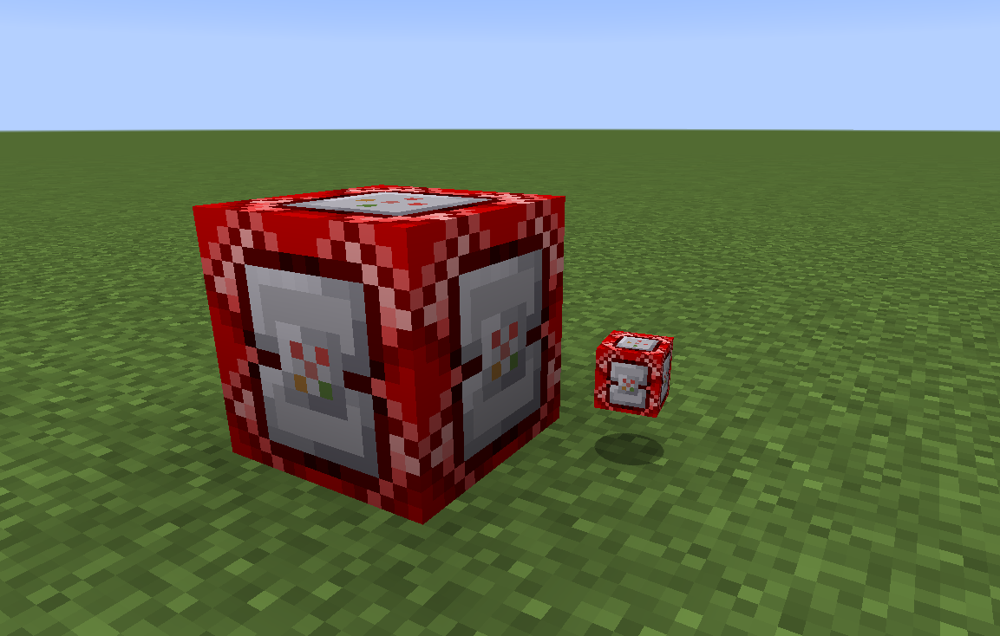
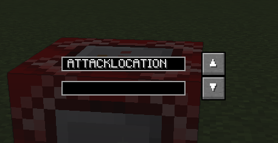

Pokémob Command Block¶
This block allows using redstone signals, or a ComputerCraft interface to issue commands to a pokémob. To link a pokémob to the commander, you right click it with the cube containing said mob, this page will mostly discuss the redstone signal applications.
The commander block has a very simple GUI. It contains the command type to send, and then the arguments for those commands. The arguments will be discussed below for each type of command:
ATTACKENTITY-<id>- Attacks mob with given entity ID, not really useful as no way to get this with just PokécubeATTACKLOCATION-<X> <Y> <Z>- Tells the pokémob to attack the given location, the Location Linker can be used to get these coordinatesATTACKNOTHING- No arguments, just uses the attack, this can be used for healing/self moves, etcCHANGEMOVEINDEX-<Index>- Changes the selected move for the pokémobCHANGEFORM- Commands your pokémob to change form, similar to the mega evolve keyMOVETO-<X> <Y> <Z> <S>- Tells the pokémob to move to the given location, with a speed specified by<S>STANCE-<value> <state>- this changes the “stance” of the pokémob,<value>istrue(for on) orfalsefor (off), and<state>is one of the following:0- Stay on/off1- Guard on/off2- Sit on/off3- Using G/Z Move on/off
SWAPMOVES-<A> <B>- Swaps moves of index<A>and<B>TELEPORT- No arguments, tells the pokémob to use teleport, this will mosty likely teleport the owner to the last selected teleport location, not very useful in general
The command is applied by sending a redstone pulse to the block. Multiple commander blocks can be linked to the same pokémob.